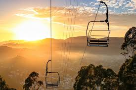
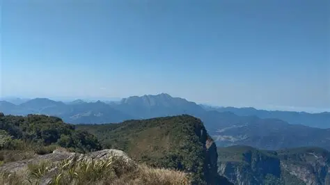
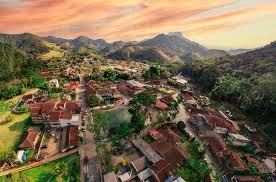
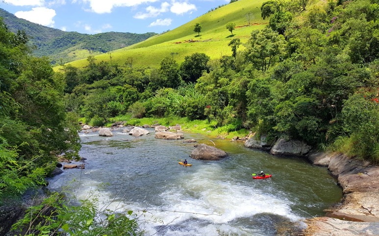

Praça do Suspiro - Localizada no centro da cidade, é considerada um polo cultural e gastronômico que preserva a história local com a Capela de Santo Antônio, fontes históricas e movimentadas feiras de artesanato de fim de semana.

Teleférico - Possui sua base na Praça do Suspiro e se destaca como um dos maiores do país em cadeiras duplas, cruzando quase 1500 metros de extensão, divido em dois estágios que levam a um centro de lazeer e ao topo do Morro da Cruz.

Pico do Caledônia - Com impressionantes 2257 metros de altitude, está localizado dentro do Parque Estadual dos Três Picos, possui uma subida íngreme e uma escadaria de concreto. O acesso para pedestres é restrito ao período das 7h às 13h.

Lumiar - Um distrito situado a cerca de 35 km do centro do município, famoso pelo ecoturismo,esportes de aventura, rios cristalinos ideais para rafting e por cachoeiras famosas como o Poço Feio e a Indiana Jones, possuindo uma atmosfera rústica com música ao vivo e restaurantes tradicionais.

São Pedro da Serra - O 7° distrito da cidade, perto de Lumiar, é um sofisticado refúgio cultural e gastronômico, com ruas tranquilas, casinhas coloridas, ateliês de artesanato, brechós, cervejarias artesanais e bistrôs requintados que se misturam com uma boemia pacata nos finais de semana.
